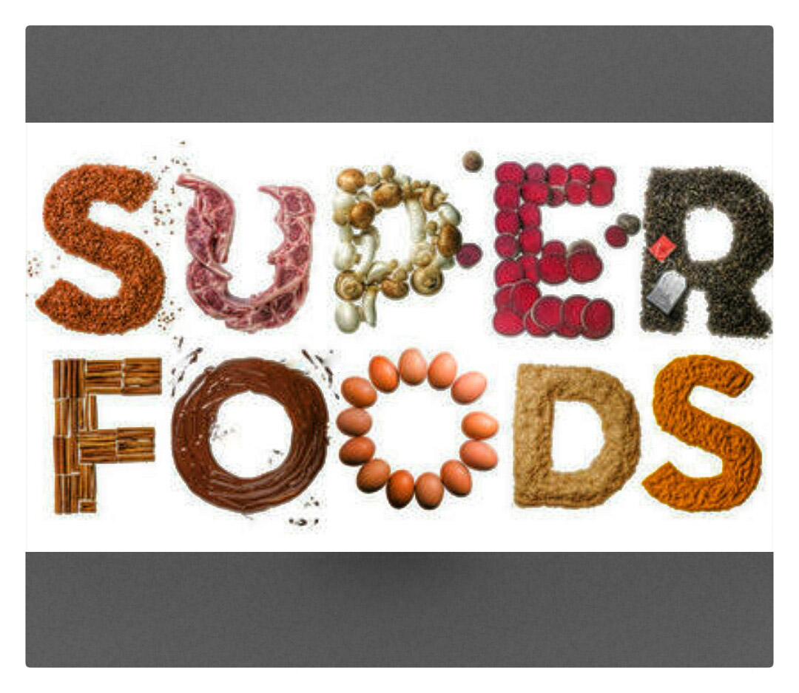

Marianna black version
Super Food
still got the blues...
macka is considered as super foodThis template is not like my others, it is a little bit special..
First of all, this design was originally made functionality and coding and .classes in the stylesheet. A fixed position site menu and some neutral images were also asked for.
Spirulina är Marianna, released in July 2015!
the main priorities
Unlike the first version of the andreas07 template, v2.0 a little bit more generic since it is no longer made for one special education. But the template is still perfectly suitable for web design studies if wanted. Here are the priorities I've had in mind for the updated version:
- The content is fully separated from the presentation. No inline styling.
- Standards-compliant: Valid XHTML 1.0 Strict and CSS2.
- Good accessibility and well-structured code. Works perfectly in text-based browsers and on small screen devices such as mobile phones and handheld computers.
- Simple and effective code that is easy to work with. The CSS file contains only a few IDs, one CSS class and a few basic HTML tags
and a few notes:
This is a free website template. It can be used in any way wanted by anyone, and there are no limitations or obligations for using this template. Commercial use is perfectly OK, credits are appreciated but not a requirement.
The example image shows a violet flower available, as are custom XHTML/CSS design services. Contact me for more information.
Good luck with your new website!
site info
© 2015 Marianna | Template design by Marianna Andreas Viklund